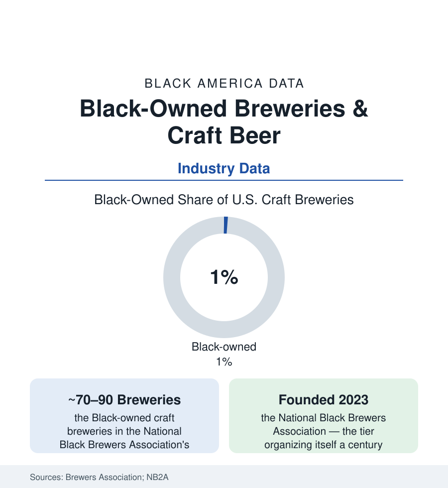

Black Business
Black-Owned Breweries: Seventy Taps in a Nine-Thousand-Brewery Industry
Black-owned breweries are under 1% of America's craft breweries — and the Black craft drinker is the industry's growth market. The Brewers Association data.

Craft beer is the beverage industry's artisanal showcase — more than nine thousand small breweries, a taproom culture, and an ownership census that the Brewers Association's own surveys render starkly: Black-owned breweries number in the dozens, under one percent of the industry, in a country where Black drinkers' craft adoption is the segment's growth story in the consumer data. The first Black-owned brewery of the modern era opened within living memory of an industry that had employed Black brewers since before the republic. This article reads the smallest tier in the business section.
The Tier: Names, Places, Models
The counts, from the National Black Brewers Association (founded 2023 to organize exactly this census) and the trade directories: roughly seventy to ninety Black-owned breweries in operation in recent tallies — against the industry's nine thousand-plus — concentrated in the cities this atlas maps (Chicago, Atlanta, Oakland, Houston, Brooklyn, Los Angeles, the Carolinas) and running the model's full range: the destination taproom-breweries (the community-third-place design — several of the tier's flagships built explicitly as neighborhood institutions, their event calendars in the brewery-as-anchor model of the bookstore file), the contract-and-alternating-proprietorship producers (brewing on others' systems — the capital gate's workaround, the license shared until the steel can be afforded), the gypsy and collaboration labels (the collab beer with an established house as the tier's marketing engine — the collaboration data showing the big breweries' diversity lines running through Black brewers' recipes), and the packaged regional players breaking into distribution. The tier's business press names its recurring economics: taproom margins as the survival line, distribution's cold arithmetic (the distributor tier's gatekeeping in the three-tier system — the wholesaler's truck as the shelf fight's beverage form), and the festival-and-tourism circuit as the discovery channel.
The Barriers, Itemized by the Industry Itself
The BA's equity-and-inclusion research and the founders' surveys converge on the capital stack, again, with brewing's specifics: the equipment ledger (a brewhouse's steel priced in the hundreds of thousands — the SBA and bank data of the financing file applied to glycol and stainless), the licensing maze priced in months (the federal TTB permit and the state and local layers — the timeline data showing the regulatory carrying costs falling on the thinnest-capitalized entrants), the real-estate tier (the industrial-zoned, water-and-drainage-equipped space a brewery requires — the industrial property market's own access data), and the network gates (the homebrew-to-pro pipeline running through club cultures and industry apprenticeships whose demographics the surveys describe). The workforce data complete the picture: Black brewers and cellar workers at low single digits of the production workforce in the industry's demographic surveys, the brewmaster tier thinner — the ownership gap's pipeline form. The counter-institutions are new and named: the NB2A's mentorship and festival infrastructure, the Michael Jackson Foundation's brewing-and-distilling scholarships (named for the beer writer — the industry's own equity fund, its grant cohorts in the record), the Black beer festivals (several drawing thousands — the consumer data's proof of market in festival form), and the established houses' incubator and contract programs graded in the trade press by the only metric that settles arguments: how many graduate to their own steel.
The Consumer: The Market Already There
The demand side of the ledger, in the consumer research: Black drinkers' participation in craft occasions rising across the segment's surveys, the Black beer-culture infrastructure (the bottle shares, the Black beer bloggers and podcasters' audiences, the festivals) of documented scale, and the flavor-and-format preferences the product data register (the stout and lager traditions, the community's documented brand loyalties in the macro tier — the brewers' own market research having known for decades what the craft tier is learning). The mismatch is the business section's familiar shape drawn in a new medium: a market demonstrated, a workforce thin, an ownership tier under one percent — and a founding generation, organized since 2023 under its own association, building the tier brewery by brewery. The industry's total addressable lesson is written in the macro data: the big brewers' Black-consumer franchises were built by marketing to a community the craft era forgot to hire or capitalize. The taprooms now rising in the cities section's neighborhoods are the correction, seventy taps at a time.
Reading the Brewery Data
Under one percent of the breweries, an organized association three years old, and a consumer base the surveys keep rediscovering: craft beer is the business file's smallest complete diagram of the whole argument — demand proven, pipeline thin, capital gated, institution built anyway. The next census of this tier is the one its founders are brewing toward. The data will count what the taprooms decide.
More in Black Business
Black-Owned Businesses: Counts, Receipts, and the Representation Gap
About 161,000 Black-owned employer firms and three million solo ventures: how the Census Bureau counts Black business ownership, where firms concentrate, and the gap between population share and business share.
Black Median Net Worth: The Wealth Gap in Federal Reserve Data
The Federal Reserve puts Black median family net worth at $44,900, against $285,000 for White families — about 16 cents on the dollar. The widest gap in economic data.
Black Buying Power: The $1.8 Trillion Consumer Economy
Black buying power is estimated at about $1.8 trillion — larger than the economy of most nations. What the figure measures, who produces it, and what it buys.
Source: Brewers Association industry surveys; U.S. Census Bureau Annual Business Survey; National Black Brewers Association; industry press records.